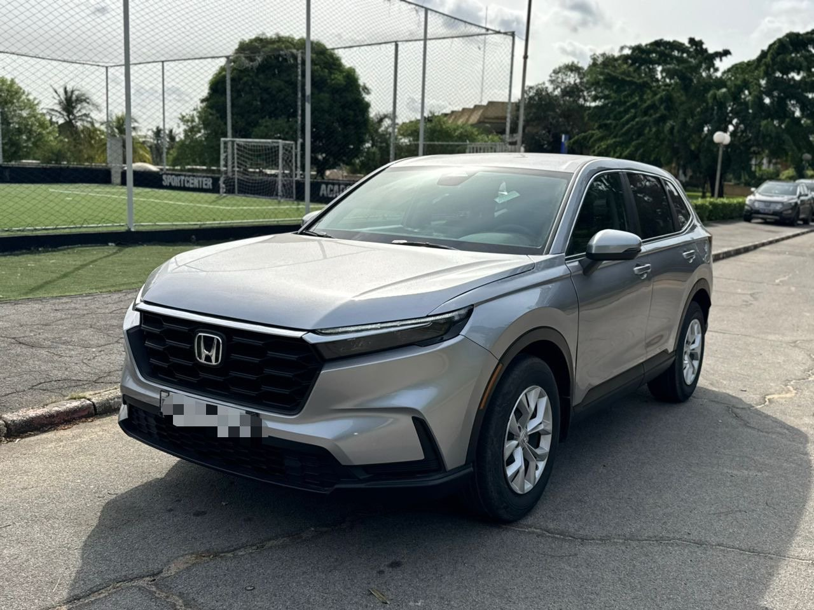

À vendre
Honda CR-V 2024
2024 · Essence · 4 cylindres · Automatique
19 500 000 FCFA
Prix négociable
Année2024
CarburantEssence
Moteur4 cylindres
BoîteAutomatique
DémarrageStart
Caméra de reculOui
Démarrage Start et caméra de recul.

2024 · Essence · 4 cylindres · Automatique
19 500 000 FCFA
Prix négociable
Démarrage Start et caméra de recul.